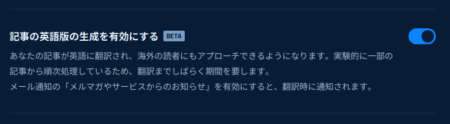

English version of my articles on Zenn

Zenn has started offering a machine-translation feature for published articles.
There was some controversy over this, and the feature is currently opt-in. I don’t have any strong objections to machine translation, so I enabled it.

Articles are being translated gradually, but since Zenn does not provide a way to navigate to translated articles from their site, I’m collecting the translated articles here. Please note that these are machine translations and I do not guarantee their accuracy.
My articles published on Zenn are released under the CC BY-SA 4.0 license.
- Trying out math/rand/v2 in Go 1.22
- Reducing Image File Size
- Some GoReleaser Settings Have Been Deprecated
- Ambiguous Braces
- Removing BOM with the Decorator Pattern
- Replacing the Standard flag Package with pflag
- Simple Email Sending in Go
- Trying Out Go Workspace Mode in a Single Repository
- Literal Constants
- Verifying Early, Middle, and Late Monthly Periods
- Official Go Vulnerability Management System
- Identifying Licenses from License Files
- Managing APT Repository Keys After apt-key Deprecation
- Labels in Go
- How Go Mitigates Supply Chain Attacks
- Zenn to Add Statistics to the Dashboard
- You don’t need to pre-declare interface types
- Easily Visualize JSON Data with PlantUML
- Pointers to Literal Values
- Handling Excel Files Like CSV
- Using crypto/rand as math/rand
- You don’t need to distribute binaries just because it’s a compiled language—with Go
- Digitally Signing Git Commits and Tags with Krypton
- iota is not always zero when it first appears
- Is Go for Large-Scale Environments?
- Query-based JSON Parser
- Evaluation of uint(1) - uint(2) and Untyped Constants
- Japanese Identifiers Cannot Be Exported in Go #golang
- Exploring github.com/pelletier/go-toml
- Calculating the ‘Day of the Ox’ (Doyo no Ushi no Hi) in Go
- Simple Excel to CSV Conversion in Go
- Who is Responsible for Handling Null?
- Trying out Task as an alternative to Make
- Splitting Unicode Strings into “Character” Units
- Trying out the goccy/go-json package
- What Does Copyright Actually Restrict?
- Generating a List of Emoji Shortcodes for Markdown
- Arrays and Slices in Go
- Breaking Changes in gonum.org/v1/plot Package
- Don’t Hold onto context.Context
- Cruel Boss and Corporate Slaves: Playing with Go Channels
- Developing a Go Package for Reading CSV Data
- Developing a Go Package to Retrieve Google COVID-19 Forecast Data for Japan
- Getting Warned for Passing a URI Variable Directly into http.Get
- The Troublesome Nature of Japanese Character Sets
- A Simple Task: Just Fetching Data from a URI
- Delegating OpenSSH Key Management to gpg-agent on Ubuntu: The Definitive Guide
- A Review of Public Key Infrastructure
- Building a Simple CUI Prompt
- Reading Text from the Clipboard
- #golang Method Expressions and Method Values
- Fetching the Latest Calendar Information from the National Astronomical Observatory of Japan [Sponsored Post]
- When to Use Interface Types in Go
- Abstraction of Concurrency in Go
- Generating PlantUML Class Diagrams from Go Packages
- Atom Editor Now Supports gopls
- Beware of LookPath When Starting Subprocesses in Go!
- Goodbye, SHA-1
- Building Testable CLI Applications with Cobra
- Retrieving OpenPGP Public Keys Registered on GitHub
- Reading JSON5 Data in Go
- When nil is not nil (or Go programmers inject dependencies as they breathe)
- A Complete CI Workflow for Go Packages with GitHub Actions
- errors.Is and errors.As are not (merely) comparison functions
- The Standard Sorting Algorithms in Go
- Never Give Out Your Private Key for Public-Key Cryptography (And I’m Not Joking)
- Displaying Feeds in GitHub Profile README
- Manage Indentation and Line Endings with EditorConfig
- The Mystery of the Switch Statement (Not Really)
- The Never-Ending Book
- GnuPG Cheat Sheet (Simplified Version)
- Generating .gitignore with gibo
- How to Set Up Creative Commons Licenses for GitHub Repositories
- Managing Zenn Articles on GitHub
- A Go Package for Fetching Feeds